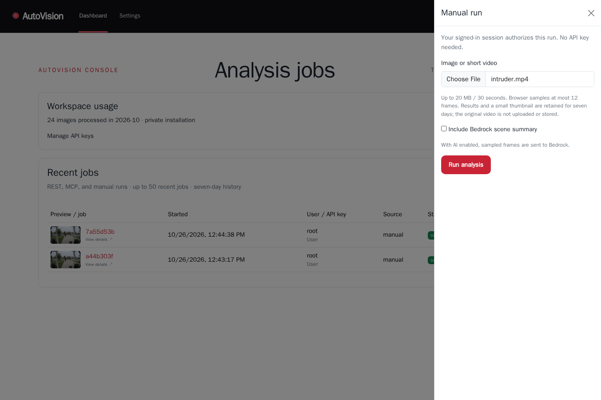
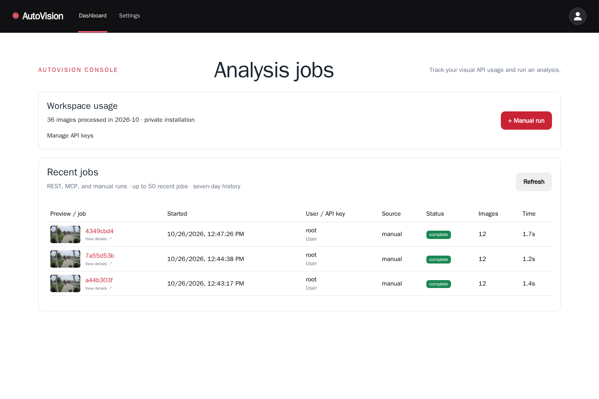
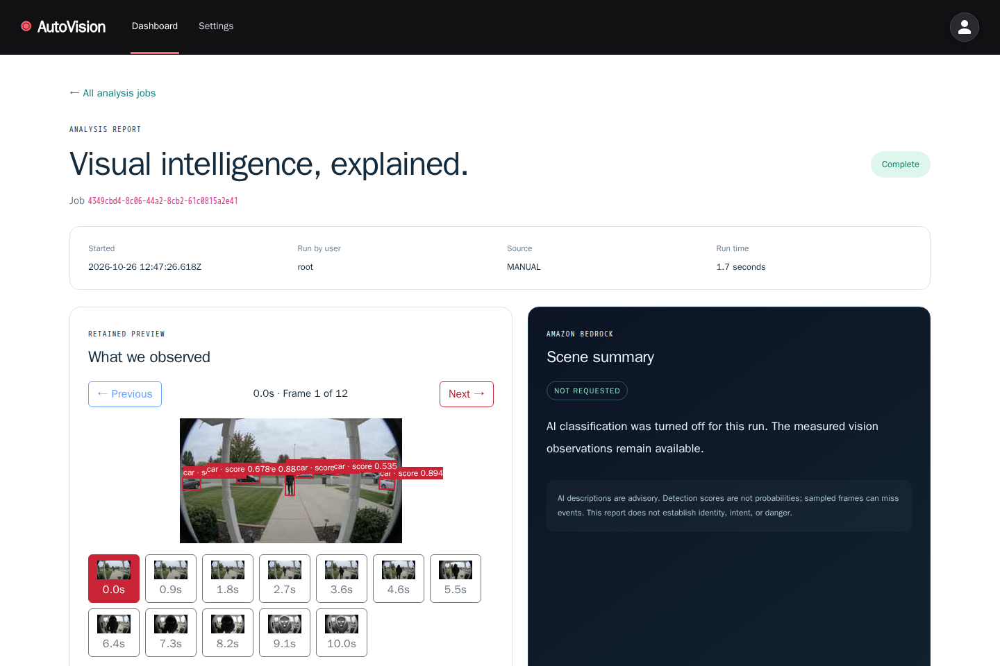
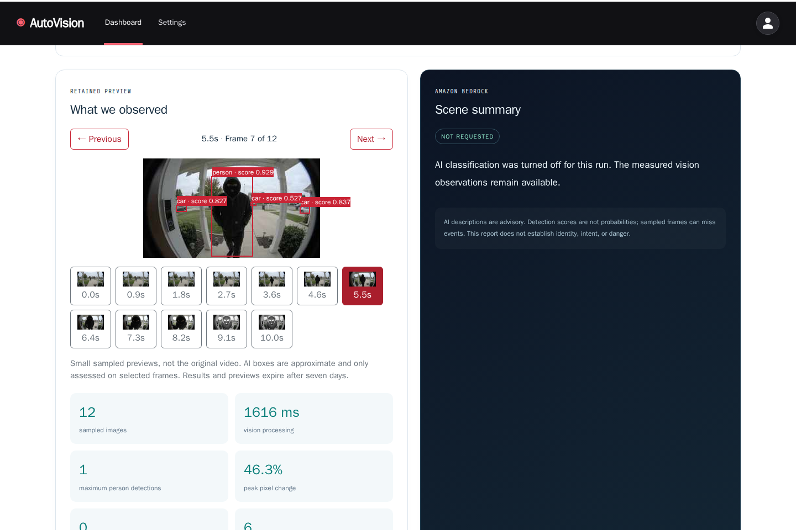
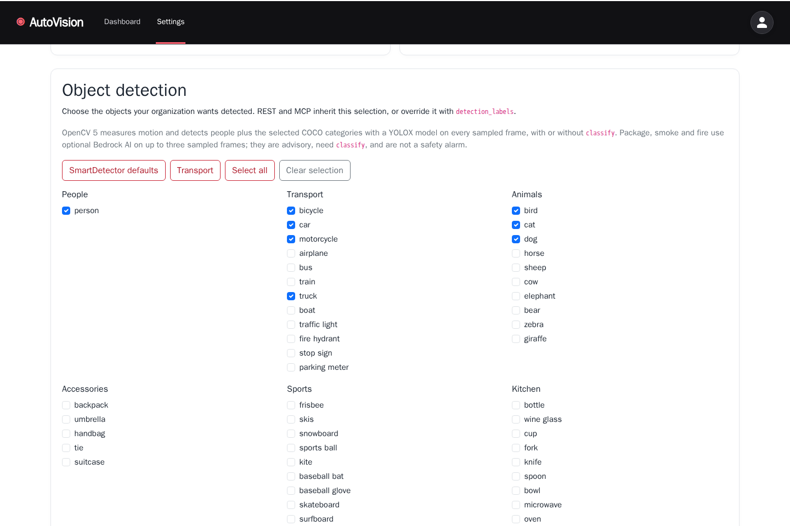
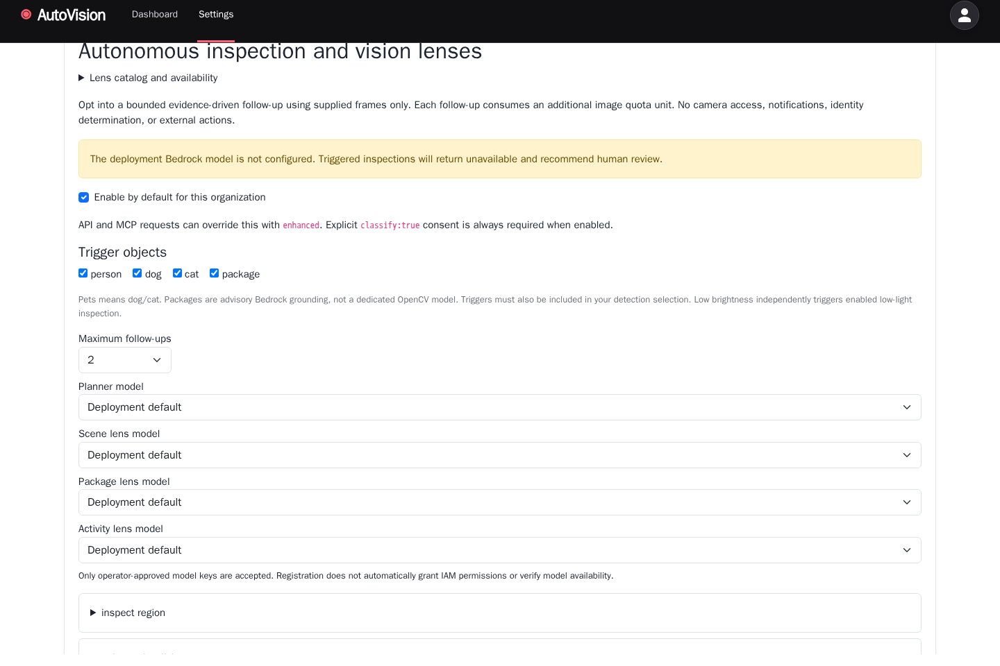
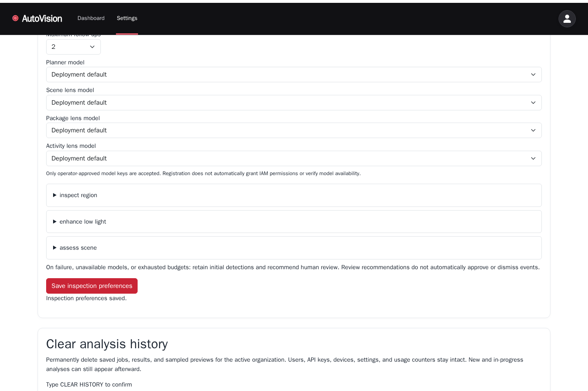
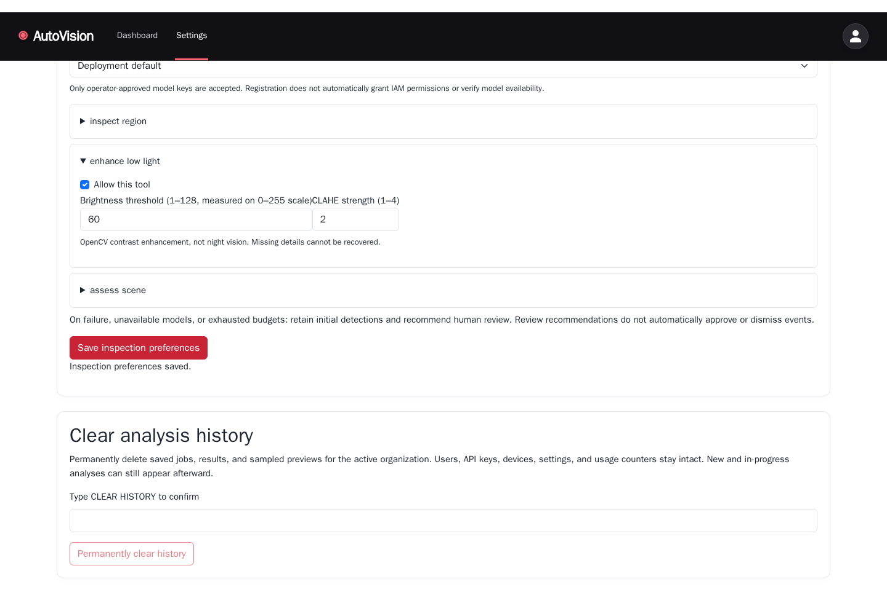
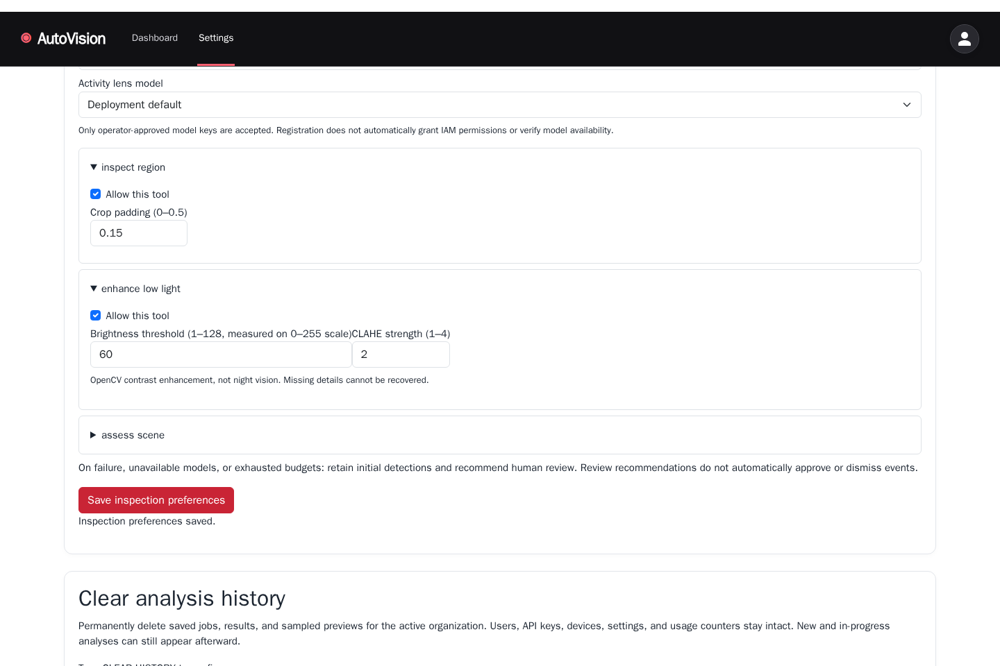

AutoVision: the real console

Signed-in console: upload an authorized short clip; browser sampling and privacy limits are shown.
Real local manual analysis persisted in private job history with actor, source, frames and duration.
Actual local OpenCV 5 result: detections, runtime information and recorded samples.
A later selected frame and measured detections from the actual local video analysis.
Organization OpenCV/YOLOX object controls, presets and advisory AI categories.
Enable enhanced AI by default, choose triggers and bound follow-ups. Model-configuration warnings remain visible.
Separate approved planner, scene, package and activity model selectors.
Allow low-light inspection; control brightness threshold and CLAHE strength.
Allow crop/re-detection and control region padding.